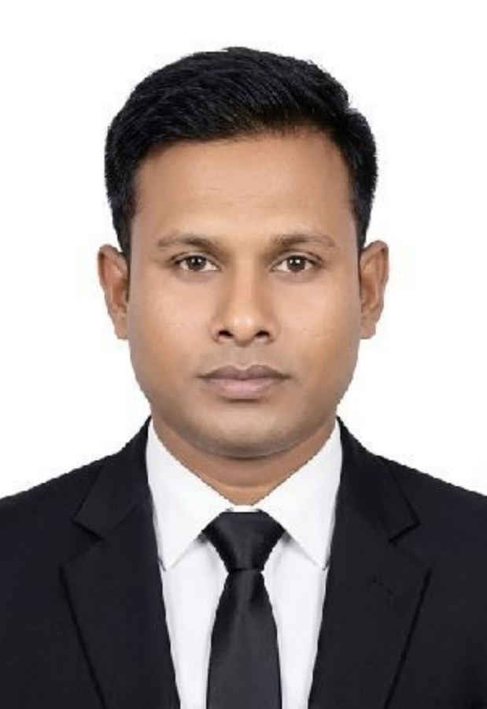

The delta's own materials, built into rooms
Nur Hossain plans large installations from the materials of rural Bangladesh: jute rope, split bamboo, river sand, fired clay and muslin.
He was born in 1981 in Shariatpur, in the char lands of the Padma, where villages are rebuilt each time the river takes the bank. That cycle of loss and rebuilding drives the work. Broken boats hang in a wave of jute rope in River of Memory. Bamboo stilt houses float above a mirrored floor in Floating Homeland, and a row of reclaimed doors stands in river sand in Tidal Threshold.
A second thread runs through Bengal's crafts and the hands behind them. Hundreds of earthenware bowls form a curving wall in Clay Remembers. An old loom spills red and white yarn across a gallery in Silent Loom, and reclaimed saris are stitched into maps in Stitched Geography. Light passes through rings of muslin, the fabric Dhaka was once famous for, in Light Through Muslin.
The works are made to be walked through rather than looked at from a distance. Most are planned at room scale, between four and six metres across.

Installation concepts, 01–20
Each work is shown as an AI-generated installation concept, with its planned materials and proposed size (width × depth × height). Numbers follow the artist's own catalogue.
Artist profile & project register
Personal details
- Name
- Nur Hossain
- Born
- 1981, Shariatpur, Bangladesh
- Nationality
- Bangladeshi
- Discipline
- Installation, sculpture, site-specific work
- Languages
- Bangla, English
Installation projects19 concepts
| No. | Title | Materials | Proposed size (cm) |
|---|
Materials & techniques
- Jute rope binding and suspensionRiver of Memory, Breathing Bamboo, Songs Beneath the Soil
- Bamboo frame constructionFloating Homeland, Breathing Bamboo, Letters to the Delta
- Terracotta and earthenwareClay Remembers, Seeds of Tomorrow, The Unfinished Courtyard
- Textile, weaving and natural dyeThreads of Belonging, Silent Loom, Stitched Geography
- Thread drawing in spaceRed Thread, Many Voices, Silent Loom
- Reclaimed and salvaged materialsUrban Sediment, Tidal Threshold, Salt Lines
- Water, glass and suspended vesselsThe Weight of Water, Monsoon Archive
- Programmable LED and architectural lightLight Through Muslin, Breathing Bamboo
Commissions, exhibitions and site-specific projects
For installation commissions, exhibition invitations, residencies or collaborations, please contact the artist.